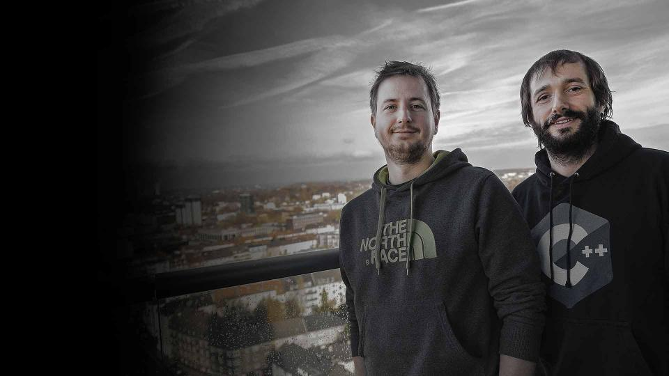
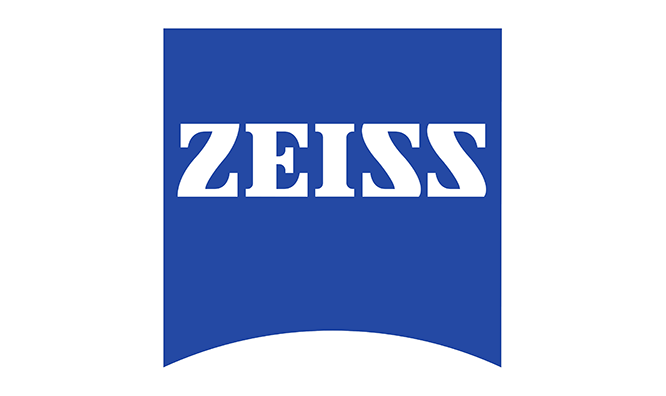
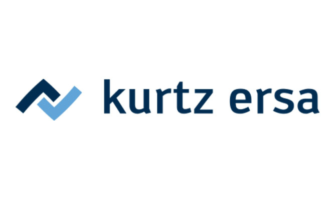
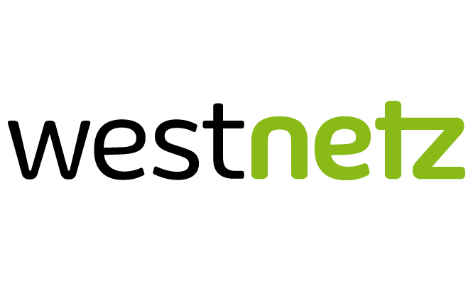
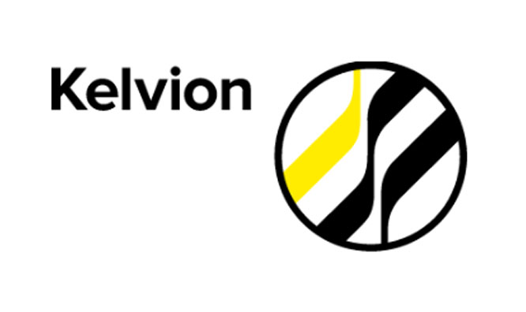
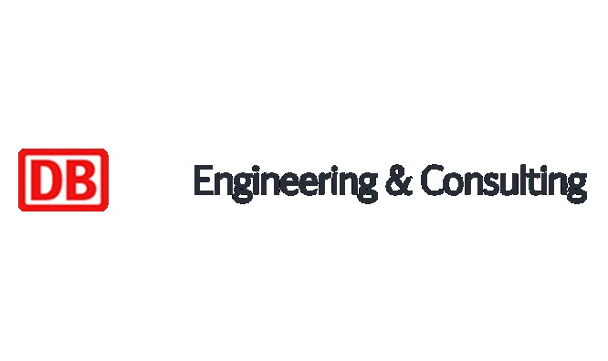
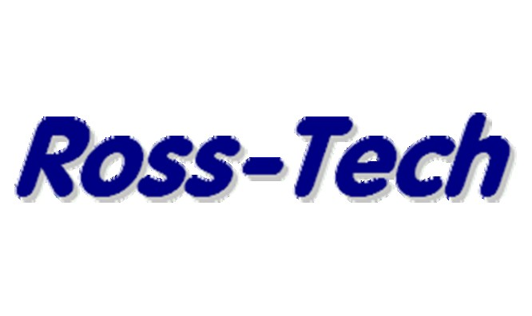
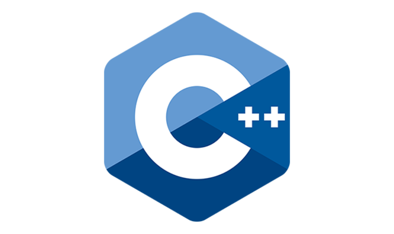
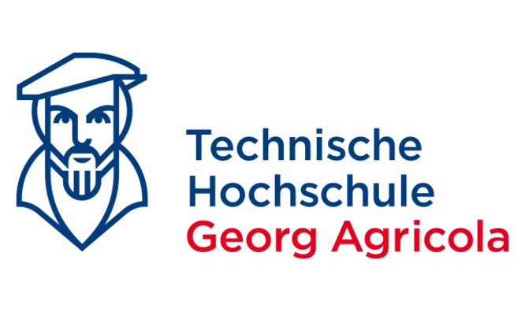
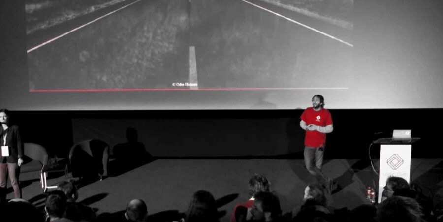

About
Our story begins with a defeat.
skAInet is the development department of Auto-Intern GmbH.
The story
Odin Holmes, from Oregon, USA, was in Bochum on a student visa at the end of the 1990s. His visa depended on his grades.
I had pretty good grades. Except in German, where I got an F.
So he asked at the immigration office what options he had for staying in Germany. Starting a company didn't sound quite as stressful to his ears. And as an 18-year-old tinkerer, he and Benjamin Menküc, now a professor and senior research advisor at skAInet, wanted to invent something that would benefit those ears: an MP3 player for cars. There was no such thing at the end of the 1990s. That's where it all started.
We wanted a radio that gets louder the faster you drive. Just what an 18-year-old wants in his car.
And this idea could only be implemented with a diagnostic device. In order for the car radio to know the speed of its vehicle, it has to receive the relevant data from the engine and adjust the volume accordingly. Diagnostic devices that can read out such data also existed 20 years ago, but their products were much more complex and accordingly a lot more expensive. In collaboration with the company Ross-Tech LLC from the United States, they developed the product VCDS. VCDS is now the best-selling vehicle diagnostic device in the world.
In 2014, physicist Stephan Bökelmann joined AUTO INTERN's development department. In less than a year, he and Odin Holmes transformed the company into a sought-after contract developer for process diagnostics in industry and science. The knowledge of vehicle diagnostics flowed into this transformation at that time.
One of our biggest challenges is to explain to people that today we build more than just tools for cars. So we founded skAInet and the nerd_force1 and the open Skunkforce e.V. and and... But that's another story.
AI-Gruppe
Well-known customers from the first year.
Already in the first year after the foundation of the research department, skAInet won well-known customers. Today we support, among others:
- Condition detection of switch actuators at Deutsche Bahn
- Temperature profile monitoring in soldering ovens at Kurtz Ersa
- Development of high-tech machines for Carl Zeiss

References









C++ community
A chair in the ISO C++ embedded workgroup.
In addition to its memberships in various industry associations, Auto-Intern is also involved in the standardization of the C++ programming language and holds a chair in the embedded workgroup of the ISO C++ Standard Committee.
Odin Holmes, also known as @odinthenerd, was the world's most booked speaker at international conferences in C++ in 2018. Odin and Stephan use the resulting network to launch their own conferences. Today, emBO++ is the largest symposium for embedded C++ development in Germany.
